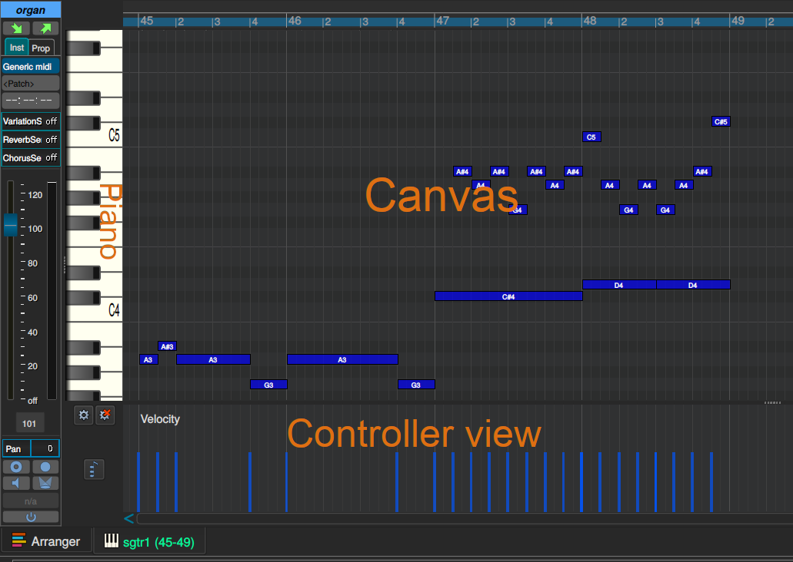
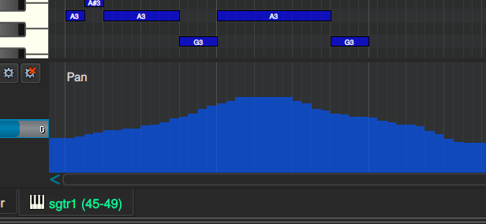
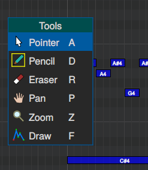
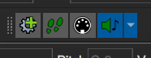
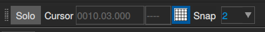

Edición en MusE
Editor Midi
El editor MIDI en MusE es un editor de tipo pianoroll tradicional como los que existen en la mayoría de los editores MIDI, por lo que es de esperar que ya esté acostumbrado a su uso.
Básicamente, la edición comienza con una pista midi y grabando midi en esta pista desde un teclado midi externo, o creando una parte midi a mano usando la herramienta de dibujo (atajo de teclado D) en el arreglador (arranger).
Cuando existe una parte midi en el arreglador, simplemente puede hacer doble clic en ella o seleccionarla y presionar Ctrl + E para abrir el Piano Roll.

Omitiendo el panel de conexiones en el extremo izquierdo, el pianoroll consta de tres partes: teclado del piano, área de trabajo (canvas) y controladores (controller view).
Pianoroll
A la izquierda hay una representación del teclado de un piano. Al hacer clic en las teclas, se reproducen las notas relevantes utilizando el dispositivo midi conectado a esta pista midi.
Área de trabajo (Canvas)
El siguiente es el área de trabajo que muestra una conexión desde cada tecla del piano sobre el área. Las notas se pueden colocar y editar a lo largo de cada parte.
En realidad, las notas también se pueden colocar después de la parte la cual se extenderá automáticamente. Sin embargo, los eventos no se pueden colocar antes del inicio de la parte, en ese caso, la parte debe cambiarse de tamaño en el arreglador antes de la edición.
Controladores
Finalmente, en la parte inferior está la vista predeterminada del controlador, que muestra en este caso Velocity. La vista del controlador permite seleccionar cualquier otro controlador disponible haciendo clic en el botón Seleccionar controlador, situado a la izquierda.
Si hay espacio para ello, se pueden agregar vistas de controlador adicionales desde la alternativa de menú Pantalla ⇢ Agregar vista de controlador (Display ⇢ Add controller view).
Como en la captura de pantalla precedente, la vista del controlador mostrará una representación gráfica del controlador elegido, en este caso la velocidad (velocity). Los eventos en la vista se pueden cambiar usando el mouse con las herramientas Lápiz (pencil) o Dibujar (draw).
In the case of Velocity only the available events can be manipulated, but for most other controllers, for instance Pan, new events can be added with the same procedure.
En el caso de Velocity, solo se pueden editar sobre las notas disponibles, pero para la mayoría de los otros controladores, por ejemplo, Balance (pan), se pueden agregar nuevos eventos con el mismo procedimiento.
There are some midi controllers who describe properties of a certain event on the pianoroll (that’s, a note!). And others that are used globally. Velocity is the example in the first case, and Volume in the second.There are some midi controllers who describe properties of a certain event on the pianoroll (that’s, a note!). And others that are used globally. Velocity is the example in the first case, and Volume in the second. (notice this paragraph is not in the english documentation)
Algunos controladores midi describen propiedades de un determinado evento en el pianoroll (o sea, una nota musical!). Y otros que son de uso general. Velocity es un caso del primero, y volumen del segundo.

Si explícitamente no desea agregar nuevos eventos, sino solo cambiar los eventos existentes mientras edita, mantenga presionada la tecla CTRL mientras dibuja.
Además, es posible que a veces desee eliminar los controladores; en ese caso, consulte el capítulo Editor de eventos.
Barra de herramientas del Pianoroll
En el pianoroll hay una barra de herramientas para manipular notas. También se enumeran en el menú contextual del area de trabajo (clic botón derecho) :

- Puntero (pointer): esta es la herramienta predeterminada donde al hacer clic en una nota la selecciona, y al hacer clic y arrastrar la puede mover.
- Las herramientas de Balance (Pan) y Zoom están disponibles y son recuerdos de un pasado de ratones sin ruedas de desplazamiento, que es la forma recomendada de desplazarse y hacer zoom.
- rueda del mouse para desplazarse hacia arriba/abajo
- Mayús + rueda del mouse para desplazarse hacia la izquierda/derecha
- Ctrl + rueda del mouse para acercar/alejar
Las letras a la derecha de cada herramienta son el atajo de teclado seleccionado actualmente.
Atajos de teclado en piano roll
Consulte el capítulo sobre atajos del teclado para obtener más información.
Barra de herramientas de Pianoroll
Botón de agregar vista del controlador (controller view button)
Agrega una vista de controlador tal como se describe en el capítulo sobre controladores.
Botón de grabación paso a paso (step recording)
Otra forma de grabar midi en el pianoroll es con la grabación paso a paso (step recording), disponible en la barra de herramientas de Pianoroll.

Cuando está seleccionada, cada clic en el piano producirá una nota grabada para la tecla presionada, la duración de la nota se deriva del valor Snap en la barra de herramientas Pos/Snap/Solo-tools.

Botón de entrada MIDI (MIDI Input button)
Si el botón de entrada Midi está marcado, pulsar las teclas de cualquier dispositivo de entrada Midi configurado será equivalente a hacer clic en el piano.
Botón reproducir eventos (play events)
Si está seleccionado, reproducirá solo la nota en la que se hace clic con el mouse. Si el menú desplegable está configurado en Reproducir Acordes (Play Chords), todas las notas se reproducirán al arrastrar el ratón.